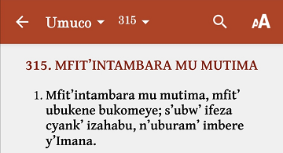
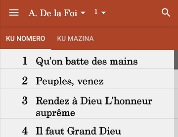
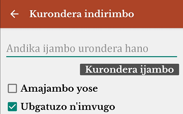
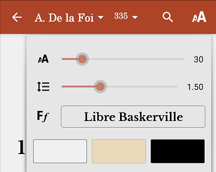
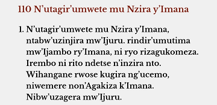
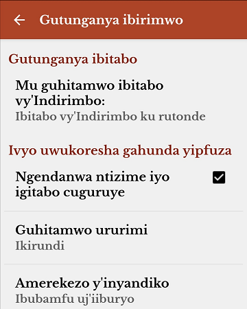
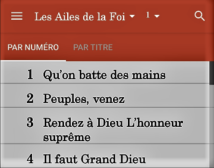
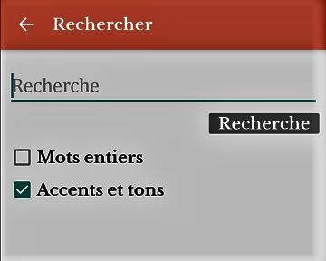

MU KIRUNDI
IBIMENYESHWA
Ndashimira Imana yo Yamfashije gushira mu ngiro umugambi wo gukora iyi gahunda y'iki gitabo c' Indirimbo Zikundwa kirimwo ubwoko 14 bw'Indirimbo. Kuri jewe cambereye ic'agaciro, kandi nibaza ko n'abo kizoshikako kizobabera umugisha.
Uko cubatswe

Ntibikenewe ko uronderera indirimbo kure yaho, kuko hejuru kw'izina ry'igitabo uhahindurira igitabo, kandi indirimbo yose ifise nimero yayo iruhande yaho. Ku ndirimbo zifise A na B ku nimero imwe, ni kuvuga ko A ariyo itangura hagasubira B munsi yayo kuri iyo nimero nyene. Nimero z'indirimbo zihuza na nimero za Gahunda (Application).

Uhejeje guhitamwo igitabo c'Indirimbo uca ubona urutonde rw'Indirimbo zirimwo, uzi inomero y'Indirimbo ugiye kurondera, ucawihutira gufyonda ku nimero iruhande y'izina ry'igitabo c'indirimbo cank'ubwoko bw'Indirimbo.

Ku ndirimbo mutazi nomero yayo canke aho itumbereye; mushobora kurondera Indirimbo iri muri ivyo bitabo bitandukanye vyose mukwandika ijambo, canke amajambo abiri canke atatu wibuka ari muri iyo Ndirimbo ukarondera.
Ako kamenyetso kari ahanditse "ubgatuzo n'imvugo" kagufasha mu gihe ijambo mwanditse murondera mu ndirimbo ririmwo ubwatuzo (accents), mu gihe mu kwandika ata bwatuzo (accents) wakoresheje kw'ijambo urondera, mushobora gukurako ako kamenyetso; bibafasha kuronka ijambo murondera n'aho ryoba ririmwo ubwatuzo.

Mushobora kugabanya canke kwongereza ubunini bw'indome canke umwanya wo hagati y'iryungane n'irindi, canke guhindura ibara rya gahunda.
Mushobora no guhindura inyandiko y'igitabo (Font) mu gufyonda imbere ya Ff mugahitamwo iyo mushaka, hama Sawa mu kwemeza iyo mwahisemwo.

Mushaka kubona indome z'Indirimbo gusa; mufyonda kabiri (2) mu ndome z'Indirimbo. Mukugarukana mugomba guhindura Indirimbo, naho nyene musubira gufyonda kabiri (2) nyene mu ndome.
Mushobora kwongereza canke kugabanya ubunini bw'indome mukoresheje intoke zibiri uzitandukanya mu kwongereza canke uzegeranya mu kugabanya.

Mushobora guhitamwo ururimi hagati y'izi zikurikira: Icongereza, Igifaransa, Ikidagi n'Ikirundi. Mushobora no kwemeza ko ngendanwa itazima mukiriko murasoma, n'amerekezo y'inyandiko. Ibi bihindura gahunda gusa, ntibihindura amajambo canke inyandiko z'indirimbo.
Mushobora no guhitamwo kubona ibitabo vy'Indirimbo mu majambo maremare canke mu majambo magufi.
Iki gitabo kigizwe n'ubwoko 14 bw'Indirimbo zitandukanye: Iz'Umuco, Iz'Ikirundi, Iz'i Gisenyi, Izo Gushimisha, Iz'Agakiza, Nyimbo za Wokovu, Nyimbo za Mungu, Tenzi za Rohoni, Sur les ailes de la Foi, Chant de Victoire, Collection des Cantiques, Impimbano, Chorus, n'Izindi.
Kuboba bipfuza ko hongerwamwo izindi Ndirimbo bobimenyesha, canke naho uwobonamwo amakosa, naho nyene yobimenyesha kugirango akosorwe. Murakoze !
Imana Ibahezagire ! Maran ata !
Mwene So NIYOYANKUNZE Daniel
EN FRANÇAIS
INFORMATIONS
Je remercie Dieu de m'avoir aidé à mettre en œuvre le projet de création de l'application de ce livre Indirimbo Zikundwa qui contient 14 types de chansons. Cela a été une bénédiction pour moi et je pense que ce sera une bénédiction pour ceux qui la recevront.
Construction
Vous n'avez pas besoin de chercher bien loin pour trouver une chanson, car au-dessus sur le nom de la collection de chansons, vous pouvez changer le type de collection de chansons et chaque chanson a son numéro à côté. Pour les chansons qui ont A et B sur le même numéro, cela signifie que A est le début, puis B en dessous sur le même numéro. Les numéros de chansons correspondent aux numéros de l'application.

Après avoir sélectionné une collection de chansons, vous verrez une liste de chansons, connaissant le numéro de la chanson que vous recherchez, vous pouvez cliquer sur le numéro à côté du nom de la collection de chansons ou du type de chanson.

Pour une chanson dont vous ne connaissez pas le numéro ni la direction où elle se trouve; Vous pouvez rechercher une chanson dans l'un de ces différents livres en tapant un mot, ou deux ou trois mots dont vous vous souvenez de la chanson et en la recherchant.
La case à cocher "Accents et tons" vous aide si le mot que vous tapez pour rechercher dans une chanson contient des accents, tandis que si vous n'avez pas utilisé d'accents sur le mot que vous recherchez, vous pouvez la décocher; cela vous permet de retrouver le mot que vous recherchez même s'il contient des accents.
Vous pouvez réduire ou augmenter la taille de la police ou l'espacement entre les phrases, ou modifier la couleur de l'application.
Vous pouvez également modifier la police en appuyant sur Ff et en sélectionnant la police souhaitée, puis OK pour confirmer votre sélection.
Si vous voulez juste voir uniquement les paroles de la chanson; double-cliquez sur les paroles de la chanson. Pour revenir en arrière et changer de chanson, double-cliquez à nouveau sur les paroles de la chanson.
Vous pouvez augmenter ou diminuer la taille des lettres en utilisant deux doigts pour les écarter, en les rendant plus grandes ou les rapprochant l'une de l'autre, en les rendant plus petites.
Vous pouvez choisir parmi les langues suivantes: Anglais, Français, Allemand et Kirundi. Vous pouvez également configurer votre écran pour qu'il ne s'éteigne pas pendant que vous lisez ou modifiez le sens de la mise en page. Cela modifie uniquement l'application, pas les paroles ou le texte de la chanson.
Vous pouvez également choisir d'afficher des collections de chansons avec des paroles longues ou courtes.
Ce livre se compose de 14 types de chansons différents: Umuco, Ikirundi, Iz'i Gisenyi, Gushimisha, Agakiza, Nyimbo za Wokovu, Nyimbo za Mungu, Tenzi za Rohoni, Sur les ailes de la Foi, Chants de Victoire, Collection des Cantiques, Impimbano, Chorus, Izindi.
Si vous souhaitez ajouter plus de chansons, veuillez nous le faire savoir, ou si vous constatez des erreurs, veuillez nous le faire savoir afin qu'elles puissent être corrigées. Merci !
Que Dieu vous bénisse ! Maranatha !
Votre frère NIYOYANKUNZE Daniel